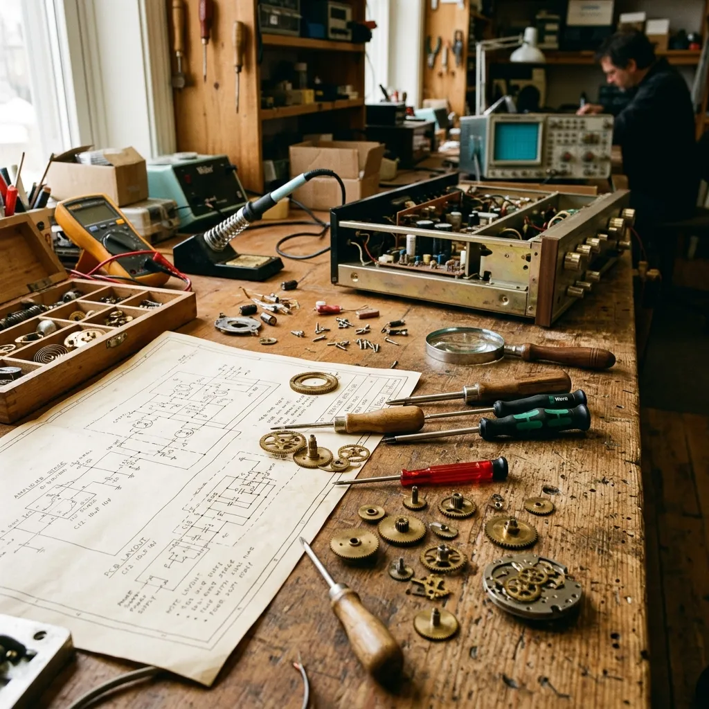
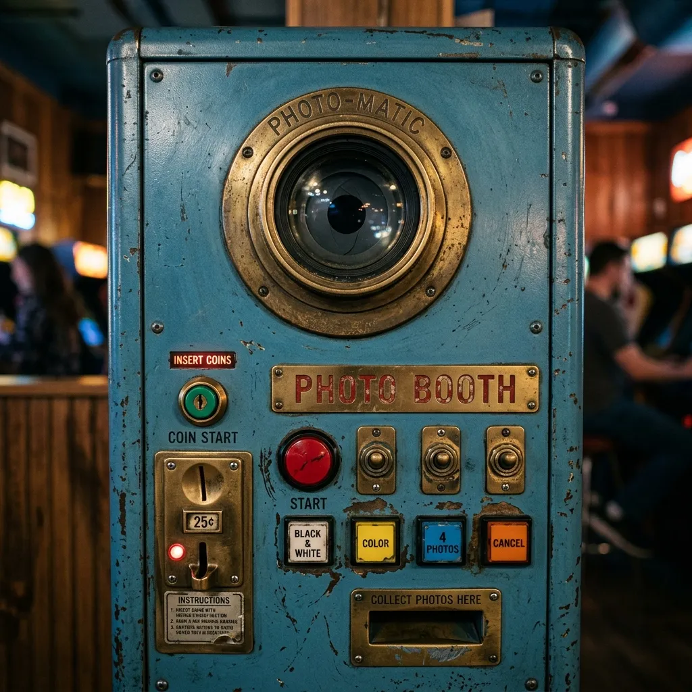

The Workshop
Operating from a former industrial ropery in Hull, East Yorkshire, our workshop is dedicated to the preservation of analogue technology. We combine traditional mechanical engineering with modern safety standards to keep photographic history functioning for future generations.

About Archive Arcade
Archive Arcade was founded in 2018 quite by accident, when our founder stumbled across a retiring Purikura workshop operator attempting to dispose of a severely water-damaged Japanese photo booth in Hull, East Yorkshire. Rather than allowing an incredible piece of mechanical history to end up as landfill, the machine was transported back to a small garage and carefully dismantled over the course of eight months. The sheer complexity of the internal mechanisms, combined with the irreplaceable nature of the optical path, sparked a realisation: these machines were rapidly vanishing, and with them, the entire ritual of mechanical photography.
What began as a singular preservation project quickly evolved into a dedicated enterprise. The workshop expanded into an old industrial unit on The Old Ropery, assembling a small but highly skilled team of engineers and photographic specialists. Our philosophy is rooted in the belief that industrial heritage shouldn't be locked away behind museum glass. It should remain tactile, functional, and accessible. By applying rigorous engineering principles to the restoration of these booths, Archive Arcade ensures that the unique experience of waiting for a physical photograph endures in an increasingly digital landscape.
Restoration Standards
Our approach to restoration is defined by a strict adherence to conservation principles. We do not attempt to make a fifty-year-old machine look brand new; rather, we aim to stabilise its condition while ensuring absolute mechanical reliability. Every machine that arrives at the workshop is subjected to an exhaustive diagnostic assessment before any tools are lifted. We document the original state of the cabinetry, noting historic repairs, factory variations, and the specific patina that tells the story of its operational life.
During the rebuild, original components are retained wherever safely possible. When parts have failed entirely, we go to extraordinary lengths to source period-correct replacements from our extensive network of European and Japanese suppliers. Our testing protocols are notoriously strict. A machine will not leave our facility until it has completed a continuous 48-hour cycle of photographic development without a single mechanical jam or chemical delivery failure. This unwavering commitment to quality ensures that our clients receive a piece of equipment that is as dependable as it is historically significant.
Learn Our Standards
Conservation ReliabilitySpare Parts & Fabrication
The greatest challenge in maintaining vintage electromechanical devices is the absolute scarcity of replacement components. Many of the original manufacturers ceased trading decades ago, and factory schematics have long since been lost. To overcome this, Archive Arcade has invested heavily in in-house fabrication capabilities. We operate precision CNC milling machines and traditional manual lathes, allowing us to reverse-engineer and manufacture critical wear components that are entirely unobtainable elsewhere. Whether we need a replacement brass drive gear with a specific tooth profile, or a nylon timing cam that has shattered after forty years of use, we have the machinery and the expertise to recreate it.
Our fabrication extends beyond internal mechanics. We regularly press new steel panels for damaged cabinets and turn custom wooden plinths to replace rotten bases, carefully matching the grain and finish of the surviving timber. This capability not only guarantees the longevity of our own restored machines but allows us to offer a vital lifeline to independent collectors struggling to keep their booths operational. If you own a vintage machine that requires a bespoke component, our engineering team can often manufacture a precise reproduction from the damaged original.
Discuss RepairsEducational Visits
We believe that the knowledge required to maintain these machines must be shared if the medium is to survive. Consequently, the Archive Arcade workshop is regularly opened to the public for structured educational visits. We host engineering students, photographic societies, and independent cinema operators, offering detailed technical tours that explore the fascinating intersection of mechanical timing, optics, and wet chemistry.
During these visits, attendees are given hands-on demonstrations of the Nine-Bench Revival Method, observing exactly how a seized gearbox is dismantled, cleaned, and reassembled. We discuss the chemical reactions occurring within the developing tanks and explain the complex electrical safety systems we integrate into every restoration. For commercial clients who have purchased a machine, we run dedicated, full-day operational workshops, ensuring their staff leave with absolute confidence in handling the chemistry and diagnosing basic faults.
Book a VisitCertifications
Placing an industrial machine containing developing chemistry and high-voltage flash capacitors into a public space requires rigorous attention to safety. At Archive Arcade, we do not simply assume a machine is safe because it functions. Every electrical system within the cabinet is entirely evaluated and, in most cases, completely rewired. We install modern RCD (Residual Current Device) protection, heavily shielded cabling, and thermal cut-offs on all heating elements. Once the electrical rebuild is complete, every machine undergoes thorough PAT (Portable Appliance Testing) by a certified independent technician.
The documentation accompanying our restorations reflects these standards. Clients receive a comprehensive safety dossier, including the PAT certification, detailed wiring schematics mapping our modern upgrades against the original layout, and full COSHH (Control of Substances Hazardous to Health) data sheets for all recommended chemistry. This documentation is specifically designed to satisfy the strict requirements of venue insurance providers and local authority health and safety inspectors, ensuring your installation is fully compliant from day one.
Request Documentation